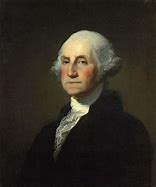
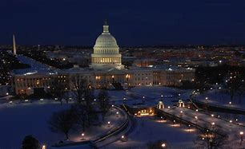
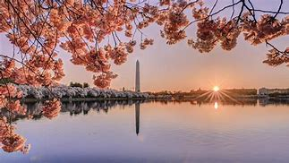
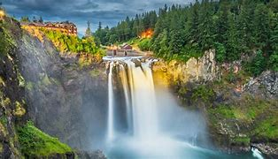
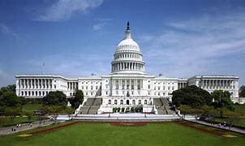

Washington was named after President George Washington by an act of the United States Congress during the creation of Washington Territory in 1853. The territory was to be named "Columbia", for the Columbia River and the Columbia District, but Kentucky representative Richard H. Stanton found the name too similar to the District of Columbia. Population:7,615 million Attractions:Olympic National Park,Mount Rainier,Space Needle Governor:Jay Inslee Universities:Washigton State University,Gonzaga University Sales tax:6.5 %
    